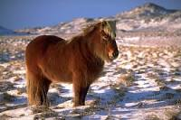

HOLA!! Bienvenidos a mi blog de animales.
Los caballos pequeños son considerados ponys solo si no superan los 1,48 metros de estatura. Por otra parte, existen varias especies de ponys y algunas de ellas muestran signos muy visibles de enanismo. En lo que se refiere al peso, generalmente no superan los 100 kilogramos en su vida adulta.
Las razas de caballos de pequeña estatura originarios de Inglaterra reciben el nombre genérico inglés de ponys; de ellos, el Shetland (el nombre de unas islas de Escocia) es el más diminuto, con tamaños que van de los 70 cm a los 106 cm hasta la cruz.
Por otro lado, y esto únicamente ocurre cuando hablamos de caballos domesticados, uno de los alimentos más baratos y básicos que se le va a dar a estos animales es el heno.
El heno puede comprarse en cualquier tienda de animales específica pero no en todos lados te van a vender un producto de calidad. Para saber elegir el heno que más le conviene a tu caballo, debes observar que este sea fresco, que sea verde y lo más importante de todo, que no contenga ni polvo ni partículas de humedad, ya que es muy común que estas se encuentren en el heno en mal estado o que se encuentra fuera de los establecimientos. Estas partículas pueden hacer que tu caballo tenga problemas de respiración o lleguen a sus pulmones creándole enfermedades graves.
Una de las técnicas que puedes llevar a cabo es enjuagar el heno varias veces en agua para que el polvo y la suciedad desaparezca, siéndole al animal más fácil digerirlo.
Existen otros alimentos que están hechos para aquellos caballos que tienen unas necesidades alimenticias especiales como es el caso de los que realizan tareas agrícolas, las yeguas que se encuentran embarazadas o también para los pequeños potrillos que necesitan más nutrientes con los que mejorar su desarrollo. Estos concentrados lo que consigue es que además del heno o del pasto, el cual debe ser la parte principal de su alimentación, les ayude también a tener todas las vitaminas y sales minerales necesarios para su correcta nutrición.Los caballos al igual que cualquier otro ser vivo necesita beber agua para que sus funciones vitales se realicen perfectamente. Este animal va a tomar una media de 40 litros de agua diarios para estar hidratado. Si uno de ellos no bebiese durante varios días o semanas esta cantidad, reduciéndose a tan solo unos cuantos litros al día, sería muy normal que le pudiera producir cólicos u otras enfermedades relacionadas con la digestión pues son animales a los que les cuesta llevar un tránsito intestinal fluido.
pincha aquí para adoptar un poni
pincha aquí para ver el catalogo disponible
| TABLA DE VALORES | Division nº1 | Division nº 2 | |
| Habitat | Clima | Litros de agua necesario | Cada cuanto lavarlo |
| China |
|
1000 | Cada 10 días |
| España | foto clima de España | 1100 | Cada 2 semanas |
| Seco | 1120 | Cada día | |